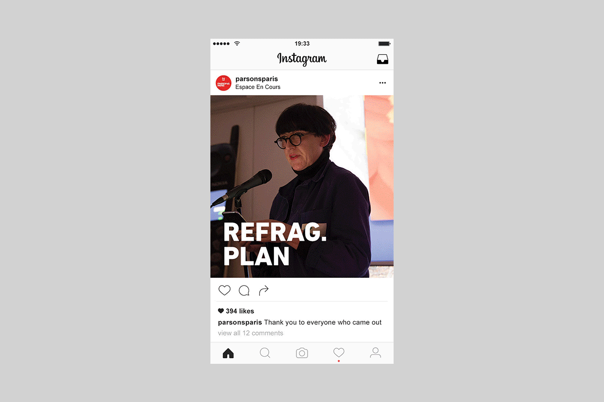
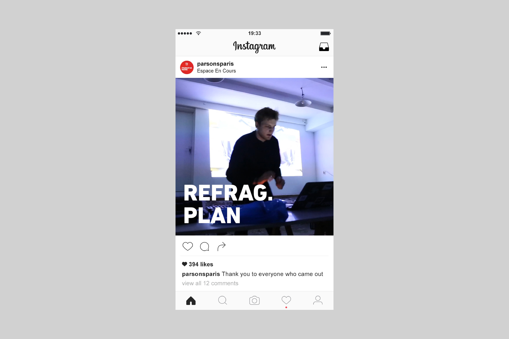

Sanie Irsay
CV
Refrag Festival
Premiere Pro, After Effects, Photoshop
Documentation of
Refrag Festival 2018.
Videos and animated gifs were shared before and after the event on social media.
Short and long versions available.


Back to top
Next